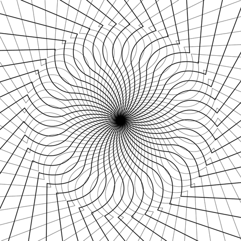

un luogo dove l'arte prende vita e ti avvolge in un'atmosfera di ispirazione e meraviglia. Con sette straordinarie mostre, esplorerai le vite e le opere di alcuni dei più grandi artisti della storia dell'arte.
Dai capolavori iconici di Vincent van Gogh alla visione ironica di Martin Parr sulla società contemporanea, ogni mostra ti offre un viaggio unico nell'espressione artistica. Scopri opere inedite di Pablo Picasso, immergiti nelle emozioni di Edvard Munch e lasciati affascinare dalla critica sociale di Ugo Mulas.
Con Chaïm Soutine, esplorerai uno stile pittorico unico e travolgente, mentre Giuseppe De Nittis ti condurrà nell'elegante mondo dell'Impressionismo italiano.
Vieni a vivere un'esperienza artistica indimenticabile nel nostro museo, dove ogni opera racconta una storia e ogni angolo è un'opportunità di scoperta e meraviglia. Ti aspettiamo!
